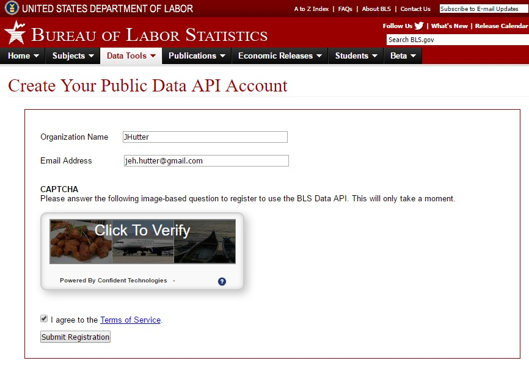

Before we jump into this API, we need to cover a few things.
You can use the BLS API without signing up for a registration key, but you will be limited to the older version of the API, as well as limited in the number of requests per day. Since registering is easy and unintrusive, it's better to go ahead and get a registration key by signing up with your email and name or organization name. Later, you will use this registration key in requests to the API.
The BLS API accepts RESTful signatures with either GET or POST HTTP type. The base URL that you will use is http://api.bls.gov/publicAPI/v2/timeseries/data/ . See the code example